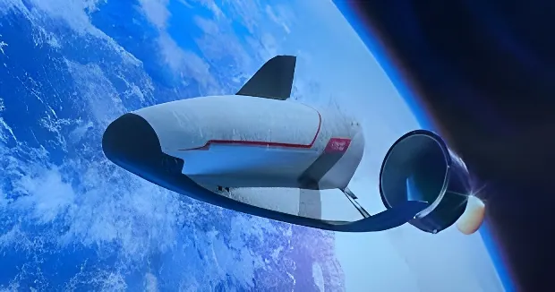

VORTEX-S : Dassault Aviation et OHB s'allient pour bâtir l'avion spatial européen
Le 11 mai 2026, Dassault Aviation et l'industriel allemand OHB ont annoncé conjointement leur candidature auprès de l'Agence spatiale européenne pour développer le VORTEX-S, un avion spatial réutilisable polyvalent capable d'effectuer des allers-retours vers les stations orbitales et des missions autonomes en vol libre. Ce partenariat franco-allemand, qui place délibérément Airbus à l'écart, prolonge la stratégie spatiale de Dassault initiée au Bourget 2025 et illustre les nouvelles fractures de l'industrie aérospatiale européenne — entre souveraineté, coopération et rivalités industrielles.
officielle Dassault–OHB
pour le démo Vortex-D
du VORTEX-S
— 6,3 tonnes
Le programme VORTEX — acronyme de Véhicule Orbital Réutilisable de Transport et d'Exploration — a été dévoilé publiquement au salon du Bourget en juin 2025. C'est là que Sébastien Lecornu, alors ministre des Armées, et Éric Trappier, PDG de Dassault Aviation, ont signé une convention de soutien au développement d'un premier démonstrateur, le Vortex-D, financé à hauteur de 30 millions d'euros par le ministère des Armées. Ce démonstrateur, conçu à environ un tiers de la taille finale prévue, doit effectuer son premier vol dès 2028 depuis Istres, où l'assemblage doit commencer fin 2026.
L'annonce du 11 mai 2026 marque l'étape suivante : la version VORTEX-S, plus grande (7,7 mètres de long, 5 mètres d'envergure, 6,3 tonnes), est celle que Dassault et OHB proposent désormais à l'ESA. Contrairement au Vortex-D, qui reste un programme national franco-français, le VORTEX-S est pensé comme une candidature européenne en bonne et due forme. Deux déclinaisons sont envisagées : le S-1 pour les missions civiles, et le S-2 à vocation défense. À plus long terme, Dassault ambitionne de développer un Vortex-C cargo à échelle 1, puis — à l'horizon 2050 — un Vortex-M habité, portant l'esprit de la navette Hermès des années 1980.

Le retour de Dassault dans le domaine spatial n'est pas une rupture : c'est une résurgence. L'avionneur de Saint-Cloud a été le maître d'œuvre industriel du programme Hermès, la navette spatiale européenne développée dans les années 1980, avant que le projet soit abandonné au début des années 1990 faute de financement. Dassault a également contribué aux études du démonstrateur de rentrée atmosphérique IXV (Intermediate eXperimental Vehicle), réalisé pour le compte de l'ESA. Ces programmes ont forgé une expertise réelle en aérodynamique hypersonique, en commandes de vol pour régimes extrêmes et en protection thermique.
C'est précisément cet héritage que Dassault met en avant pour justifier son positionnement sur le VORTEX-S. L'entreprise se présente comme l'un des rares acteurs européens à maîtriser simultanément les technologies d'avionique de haute fiabilité, les commandes de vol à tolérance de panne, et les matériaux résistant aux cycles thermiques répétés de rentrée atmosphérique — autant de briques critiques pour un véhicule orbital réutilisable.
Dassault Aviation, maître d'œuvre industriel du programme Hermès, la navette spatiale européenne. Le programme est abandonné en 1992 faute de financements suffisants, mais l'expertise technique est préservée.
Premier vol réussi de l'IXV (Intermediate eXperimental Vehicle) de l'ESA, démonstrateur de rentrée atmosphérique auquel Dassault a contribué. Le vol valide des technologies clés pour de futurs véhicules orbitaux réutilisables européens.
Salon du Bourget : Sébastien Lecornu et Éric Trappier signent la convention de soutien au démonstrateur Vortex-D. Dassault dévoile la maquette du Vortex au Space Hub du Bourget — premier apparition publique du projet.
Annonce conjointe Dassault Aviation – OHB : les deux groupes proposent à l'ESA le VORTEX-S, avion spatial polyvalent réutilisable. Candidature présentée depuis Saint-Cloud (France) et Brême (Allemagne).
Début de l'assemblage du démonstrateur Vortex-D à Istres. Les choix techniques définitifs sont finalisés dans les bureaux d'études de Saint-Cloud et Mérignac dans le courant de l'été 2026.
Premier vol prévu du démonstrateur Vortex-D, version à 1/3 de la taille finale, pour validation en vol des briques technologiques critiques : vol hypersonique, rentrée atmosphérique contrôlée, protection thermique avancée.
Premier vol planifié du VORTEX-S, en version S-1 (civile) et S-2 (défense). Ce véhicule à échelle 2/3 (7,7 m de long, 6,3 tonnes) constituerait l'étape intermédiaire avant un Vortex-C cargo à pleine échelle.
La sélection d'OHB comme partenaire principal est en elle-même un signal fort. Dassault aurait pu se tourner vers Airbus, l'autre grand intégrateur européen de systèmes spatiaux complexes, reconnu comme tel par l'ESA au même titre qu'OHB et Thales Alenia Space. Mais les deux groupes entretiennent une relation conflictuelle depuis des années, notamment sur le programme SCAF (Système de Combat Aérien du Futur), où leurs désaccords répétés sur le partage des responsabilités industrielles et des droits de propriété intellectuelle ont failli faire capoter le projet à plusieurs reprises.
Éric Trappier a lui-même formulé ce contraste lors de l'assemblée générale de Dassault, quelques jours après l'annonce : « Ce qu'on n'a pas réussi à faire sur le SCAF, on arrivera à le faire sur le Vortex. Nous n'avons de souci avec aucun gouvernement. » En optant pour OHB, une entreprise familiale basée à Brême comptant environ 4 000 employés, Dassault mise sur la complémentarité plutôt que sur la cohabitation forcée entre géants industriels.
« Le Vortex-S pour l'ESA est une initiative ambitieuse, motivée par le besoin de capacités de transport spatial autonomes en Europe. Entreprises familiales de haute technologie, nous partageons la même vision et apportons des atouts complémentaires — Dassault Aviation en tant qu'avionneur et OHB en tant qu'entreprise spatiale. »
— Marco Fuchs, directeur général d'OHB, 11 mai 2026« Nos amis allemands d'OHB sont des partenaires naturels pour participer à ce projet, en apportant leur remarquable expertise. Nous sommes très heureux de cette collaboration, qui promet d'être très fructueuse. »
— Éric Trappier, PDG de Dassault Aviation, 11 mai 2026Le VORTEX-S entre en concurrence directe avec le Space Rider développé par Thales Alenia Space pour l'ESA, une mini-navette réutilisable dont le premier vol est également prévu pour 2028. Les deux projets visent le même commanditaire (l'ESA), le même créneau de marché (transport orbital réutilisable), et des calendriers proches. Cette mise en concurrence est en réalité souhaitée par l'agence, qui cherche à stimuler l'émulation industrielle européenne dans un secteur où la souveraineté est désormais perçue comme un enjeu stratégique de premier ordre.
À l'échelle mondiale, le VORTEX-S se positionne face au X-37B de l'US Space Force, un avion spatial militaire américain opérationnel depuis 2010 et qui a déjà réalisé plusieurs missions de longue durée en orbite. La Chine, de son côté, développe activement ses propres véhicules orbitaux réutilisables. Dans ce contexte, le projet Dassault–OHB répond à un constat simple : l'Europe ne dispose d'aucun équivalent autonome à ces plateformes, et cet angle mort est jugé intenable sur le plan stratégique.

| Véhicule | Pays / Opérateur | Statut | Usage |
|---|---|---|---|
| VORTEX-S | France–Allemagne / ESA | Candidature (mai 2026) | Civil + Défense |
| Space Rider | Italie–Europe / ESA | En développement (vol 2028) | Civil / scientifique |
| X-37B | États-Unis / USSF | Opérationnel depuis 2010 | Militaire |
| Shenlong | Chine / Armée | Opérationnel (missions 2020+) | Militaire |
Le programme Vortex est conçu dès l'origine comme un programme « intrinsèquement dual ». La convention signée avec le ministère des Armées au Bourget 2025 inscrit explicitement les missions militaires dans l'ADN du projet. Les usages envisagés incluent notamment la surveillance depuis l'exo-atmosphère, la désignation de cibles hors de portée des systèmes sol-air adverses, et le transport de charges utiles sensibles. Certains analystes voient dans le VORTEX-S un futur élément de la « Kill Web » du chasseur Rafale F5, permettant de bâtir une chaîne de détection et de frappe à longue portée sans exposer les aéronefs de veille et de ravitaillement.
Pour les missions civiles, les capacités visées sont multiples : ravitaillement et logistique vers les stations orbitales privées qui devraient succéder à l'ISS, déploiement de satellites en orbite basse, récupération de débris spatiaux, et missions scientifiques de courte durée en vol libre. C'est cette polyvalence civile-militaire qui constitue le principal argument commercial du programme vis-à-vis de l'ESA et des gouvernements européens appelés à le financer.
L'alliance Dassault–OHB ne garantit pas, à elle seule, l'aboutissement du programme VORTEX-S. L'ESA devra arbitrer entre plusieurs propositions concurrentes, et les budgets spatiaux européens restent contraints. Mais l'initiative porte une signification qui dépasse le simple appel d'offres : elle démontre que l'industrie aérospatiale européenne est capable de se recomposer selon des logiques de complémentarité choisie, en dehors des grandes coalitions traditionnelles. Elle révèle aussi que la frontière entre l'aéronautique et le spatial s'efface progressivement — Dassault, avionneur de défense, devient un candidat crédible à l'orbite. Que le VORTEX-S vole un jour ou non, le projet aura déjà contribué à redessiner la carte industrielle spatiale du continent, en plaçant la souveraineté d'accès à l'espace au rang des priorités stratégiques européennes — au même titre que l'énergie ou les semi-conducteurs.